한국영화박물관
한국영화의 모든 것을 보고 느낄 수 있는 보물창고
한국영화를 보다
초기영화로의 초대
상설전시
한국영화를 보다
장소 | 한국영상박물관 상설전시실
한국영화박물관에는 영화매체가 처음 우리나라에 들어와서 오늘날 한국영화가 전 세계에 한류의 바람을 일으키기까지 우리 영화 100년의 기억들이 숨쉬고 있습니다. 이곳에서 한국영화의 지난 역사를 눈으로 보고, 귀로 듣고, 직접 체험할 수 있습니다.
한국영화박물관은 상설전시와 기획전시로 나뉘어 연중 전시프로그램을 운영하고 있습니다. 상설전시는 한국영화사를 세부주제별로 14개의 섹션으로 나누어 전시하고 있습니다
영화의 탄생
한국영화의 탄생 이전 프랑스 뤼미에르 형제를 비롯한 미국의 에디슨, 독일의 슈클라다노프스키 형제 등이
영화를 발명하고 상영한 세계의 영화 발명 및 상영에 관한 내용과 나라별로 영화의 탄생 시기 등을 알아봅니다.
신기한 경험의 시작, 활동사진 조선에 오다
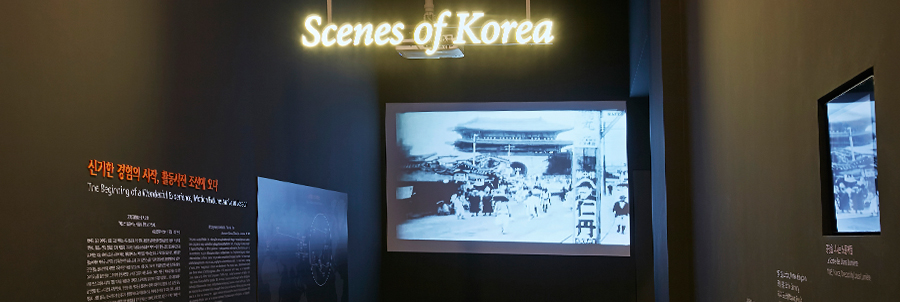
| 활동사진이 조선에 들어온 경로와 과정
미국의 여행가 버튼 홈즈를 통해 활동사진이 처음 조선에 들어온 경로와 버튼 홈즈가 촬영한 활동사진을 고종에게 보여주고 이후
대중에게 공개되는 과정을 설명하고 있습니다. 1900년대 초기 영상물을 통해 당시 우리나라의 생활상과 사회상을 살펴볼 수 있습니다.
한국영화 100년의 시간
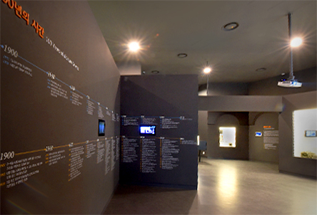
| <한국영화 100년의 시간> 입구의 모습
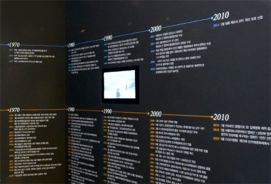
| 한국영화사 연표의 일부
한국영화의 탄생 시기부터 최근에 이르기까지 연표를 통해 한국영화 역사의 흐름을 볼 수 있습니다.
근대, 식민, 조선영화
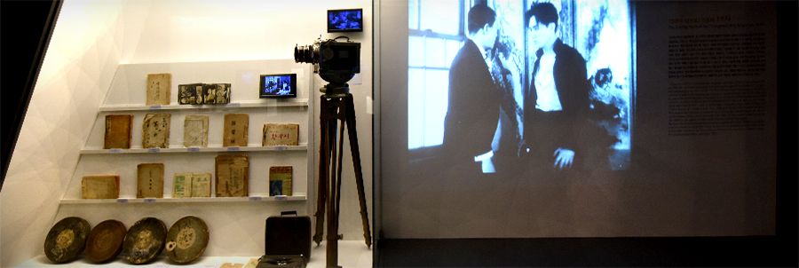
| 초기 한국영화 시나리오와 촬영용 카메라
1900년대 초기부터 1945년 해방 이전까지, 최초의 조선영화의 등장과 영화인들의 활동, 일제 식민지하에서의 조선영화의 체제 등을 알아보고 당시 제작된 작품의 영상물과 스틸사진 등을 직접 확인할 수 있는 공간입니다.
해방과 전쟁
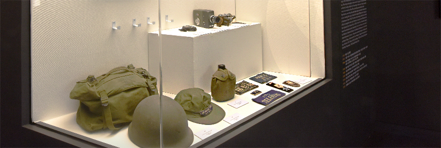
| <집없는 천사>(1941) 등을 촬영했던 김학성 촬영감독이 6.25전쟁 당시 정훈국 소속으로 전쟁 현장을 촬영했던 카메라와 착용 군복
일제 식민지와 6.25 전쟁을 겪으면서 폐허가 된 당시 영화제작 환경과 시스템을 극복하고 한국영화의 명맥을 이어가고자 하는 영화인들의 활동과 작품을 살펴볼 수 있는 공간입니다.
매혹과 혼돈
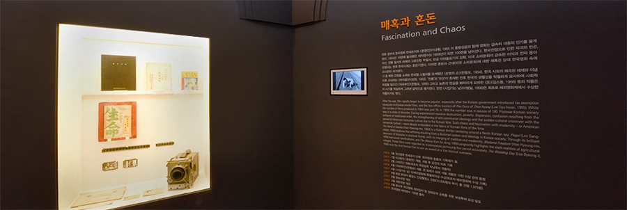
| 1950년대 작품 시나리오와 수도영화사에서 사용했던 촬영용 카메라
1950년대, 한국전쟁으로 인한 파괴와 빈곤, 무질서와 반공 이데올로기의 강화, 미국 소비문화의 급속한 확산 등으로 혼란기를 맞은 한국사회가 그대로 투영된 한국영화의 작품 경향을 살펴볼 수 있습니다.
한국영화 르네상스
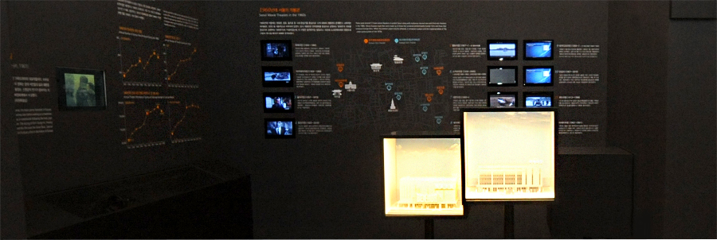
| <한국영화 르네상스> 섹션 전경
1960년대는 한국영화의 황금기로 이 시기에 만들어졌던 작품들과 서울 시내 개봉관의 정보와 당시 제작 편수와 관람객 수 등의 관련 정보를 확인할 수 있습니다.
청년문화의 시대
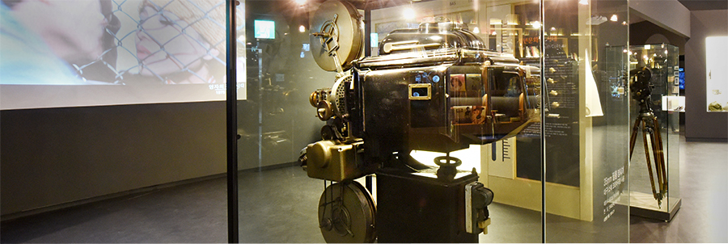
| <청년문화의 시대> 섹션 전경
1970년대 불황기를 맞은 한국영화계에는 이를 극복하기 위한 신인감독들의 등장과 기존 감독들의 지속적인 활동 등을 청년문화를 대표하는 작품과 소장자료 등을 통해 확인할 수 있습니다.
변화의 바람
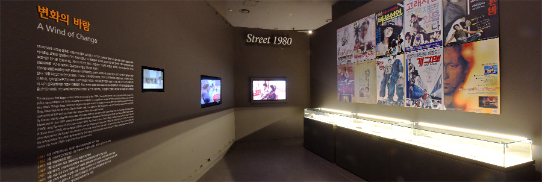
| 1980년대 영화의 포스터들
불황이 더 깊어진 1980년대 영화계의 작품 경향과 이를 극복하기 위한 다양한 분야의 영화 활동 등을 당시 사회상과 더불어 살펴볼 수 있습니다.
영상문화의 폭발
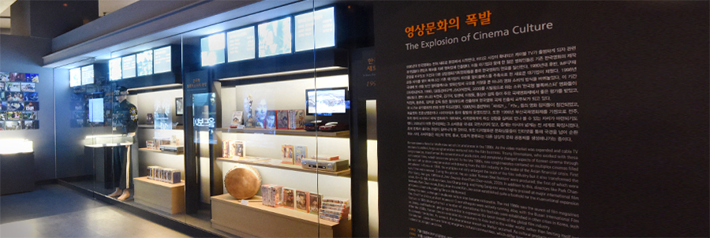
| 1990년대를 대표하는 영상매체인 비디오테이프와 DVD
1990년대에 들어서 홈비디오 시장이 확대되고 케이블 TV가 출범하는 등 미디어 부분의 새로운 환경 변화에 따라 멀티플렉스 극장, 블록버스터 영화, 대기업의 영화시장 참여 등 영화산업이 발달하였습니다. 이에 변모하는 한국영화의 모습을 볼 수 있습니다.
아카이브
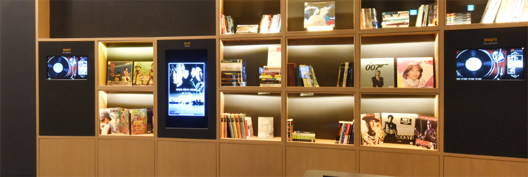
| 포스터를 찾아보고 영화음악까지 즐길 수 있는 아카이브
영상자료는 영화필름 외에 포스터와 영화음악 등이 있습니다. 이곳에서는 미디어테이블을 통해 연대별 주요 영화작품, 감독, 배우 등을 검색하여 정보를 볼 수 있으며, 포스터와 영화음악 등을 검색하여 보고 듣는 등 직접적인 감상을 할 수 있습니다.
한국영화 100선
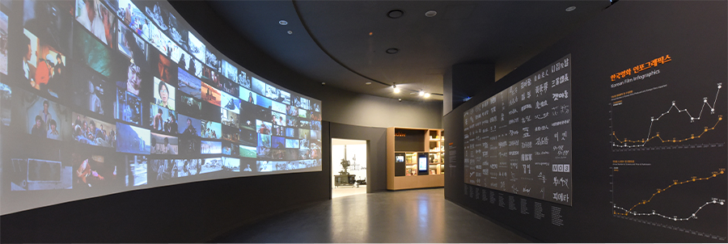
| <한국영화 100선>으로 선정된 101편의 작품 하이라이트 영상
한국영화 초창기부터 2012년까지 개봉한 현재 필름이나 콘텐츠가 남아있는 장편영화 중, 한국영화사를 대표하는 작품, 당대의 대중 의식을 반영하였거나 한국사회의 독특한 맥락에서 제작되어 사전 연구 가치가 높은 작품, 장르적 혹은 예술적 완성도가 높은 작품 등 한국영화를 대표할 만한 작품 100편을 선정하여 주요 장면의 영상물과 영화 타이틀을 함께 전시하였습니다.
영화인
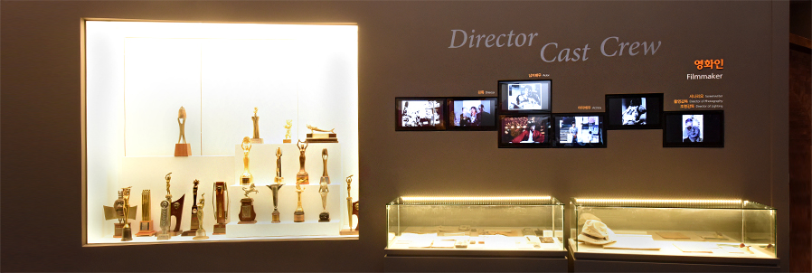
| 영화인들이 수상한 주요영화제 및 영화상의 트로피
한국영화 100선의 작품에 출연 또는 연출, 스태프 등으로 참여하였거나 국내외 영화제에서 수상 경력이 있는 영화인들을 기리는 섹션입니다. 영화인들의 주요 필모그래피와 연출 노트, 소장품 및 각종 영화제 트로피 등을 보실 수 있습니다.
상설전시
초기영화로의 초대
장소 | 한국영화박물관 상설전시실 초기영화로의 초대
한국영화박물관은 ‘초기영화로의 초대’ 전시를 통해 19세기 후반 영화의 탄생 과정과 당시 영화인을 조망합니다. 총 4개 섹션을 통해 초기영화의 중요한 순간들을 마주하며, 과연 ‘영화’는 무엇인지, 미래의 영화는 모습일지 상상하는 계기가 되고자 합니다.
시네마토그래프 모형을 통해 상영되는 초기영화 10편
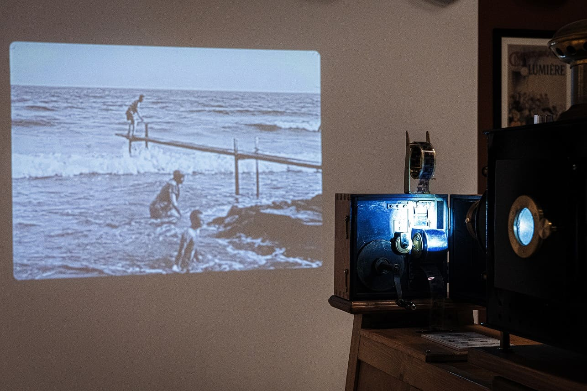
| 시네마토그래프 모형을 통해 상영되는 초기영화 10편
오귀스트와 루이 뤼미에르 형제는 그들이 발명한 시네마토그래프로 촬영한 <뤼미에르 공장을 나서는 노동자들>을 1895년 3월 22일 국립산업진흥원에서 산업관계자들로 구성된 대중을 대상으로 최초 상영했습니다. 그리고 1895년 12월 28일에는 파리 그랑 카페의 인디안 살롱에서 최초 유료 상영회를 개최했습니다.
이 상영회가 개최되었던 1895년을 우리는 일반적으로 영화의 원년으로 기념합니다. 움직임을 기록할 수 있는 장치들을 앞서 발명했던 다수의 선구자가 존재했지만, 시네마토그래프는 스크린 영사를 통해 대중이 동시에 영화를 보는 공동체적 관람을 가능하게 했고 영화는 이렇게 재현을 가능하게 하는 도구의 발명보다 함께 관람하는 공동체의 경험을 영화의 시작으로 생각하고 있습니다.
이번 전시는 시네마토그래프를 모형 재현하여 최초의 유료 상영회 당시 상영된 10편의 초기영화를 감상하실 수 있습니다.
키네토그래프 & 키네토스코프, 필름 영화의 시대를 열다
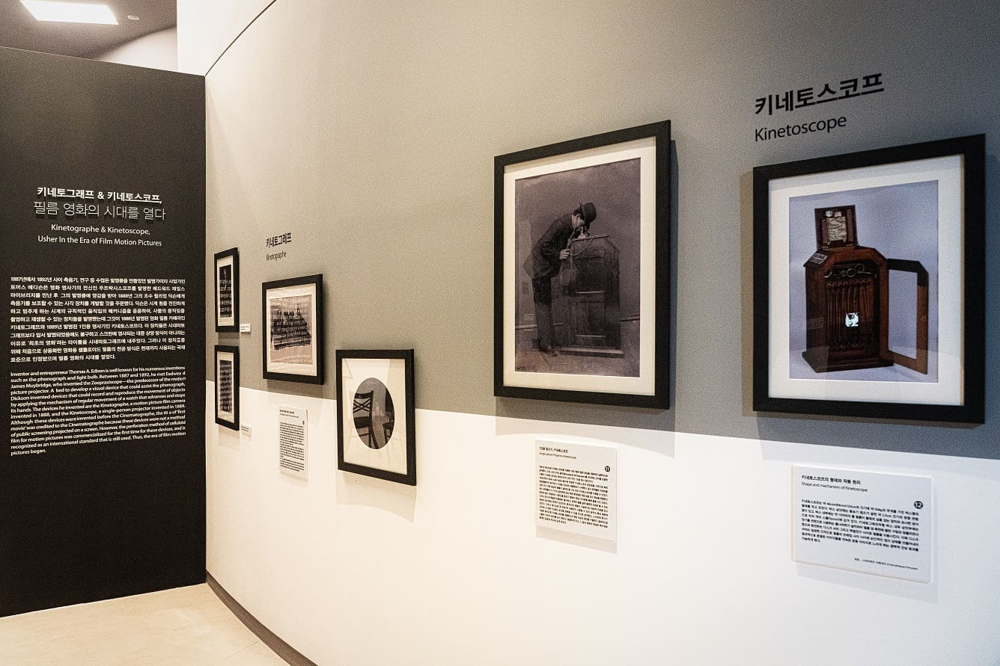
| 키네토그래프 & 키네토스코프, 필름 영화의 시대를 열다 섹션 일부
에디슨의 키네토스코프 모형
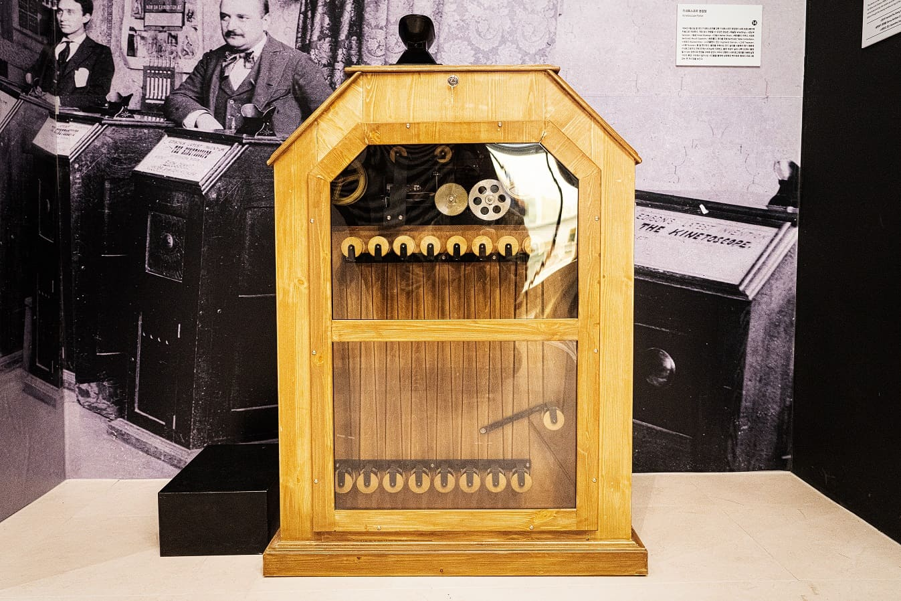
| 에디슨의 키네토스코프 모형
토머스 에디슨은 1888년 그의 조수 윌리엄 딕슨과 함께 영화 필름 카메라인 키네토그래프를, 1889년에는 1인용 영사기인 키네토스코프를 발명했습니다. 이 장치들은 시네마토그래프보다 앞서 발명되었음에도 불구하고 스크린에 영사되는 대중 상영 방식이 아니라는 이유로 ‘최초의 영화’라는 타이틀을 시네마토그래프에 내주었다. 그러나 이 장치들을 위해 처음으로 상용화한 영화용 셀룰로이드 필름의 천공 방식은 현재까지 사용되는 국제 표준으로 인정받으며 필름 영화의 시대를 열었습니다.
이번 전시는 키네토스코프를 모형 재현하였으며, 모형을 통해 에디슨이 제작한 3편의 초기영화를 감상하실 수 있습니다.
최초의 여성 감독, 알리스 기
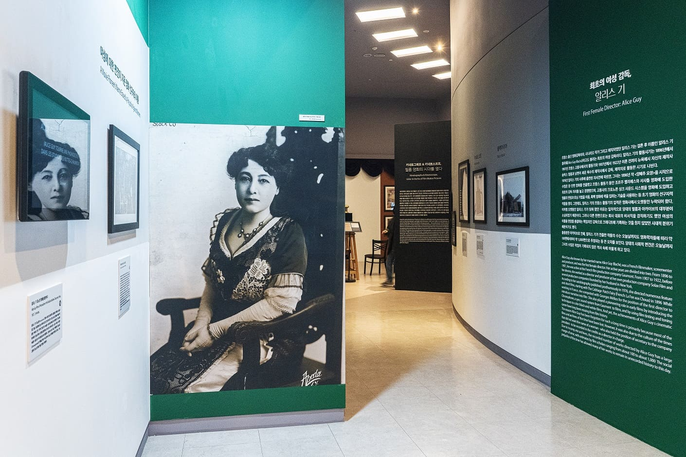
| 최초의 여성 감독, 알리스 기
양배추 요청, 포토존
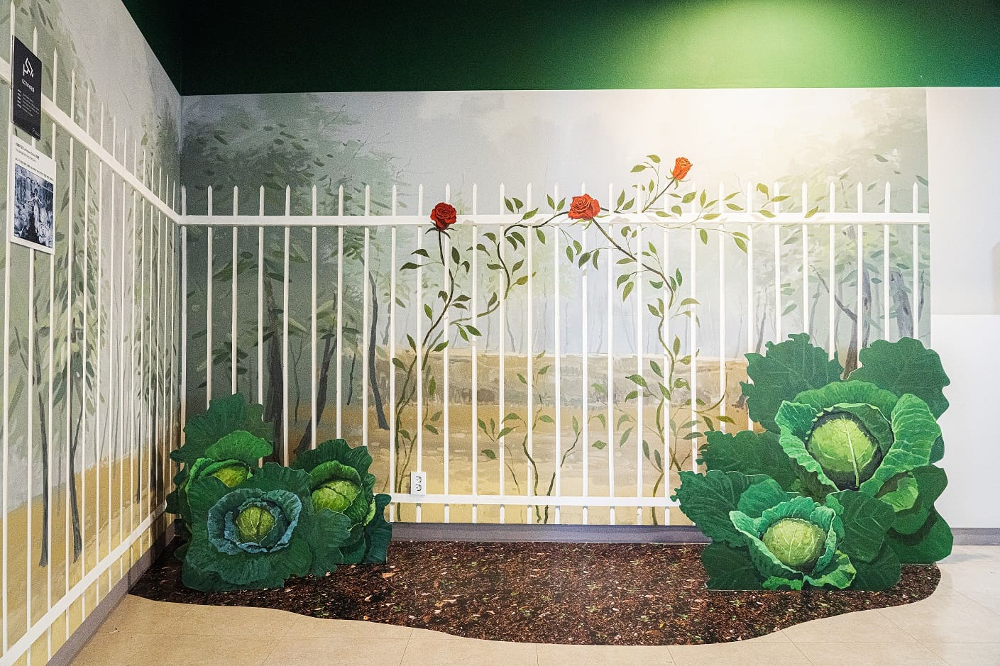
| 양배추 요청, 포토존
프랑스 출신 영화감독이자, 시나리오 작가 그리고 제작자였던 알리스 기는 최초의 여성 감독입니다. 그녀는 1896년 작 <양배추 요정>을 시작으로 수많은 장·단편 영화를 연출했고 프랑스 활동기 동안 조르주 멜리에스와 서사를 영화에 도입한 최초의 감독 자리를 놓고 경쟁했습니다. 또한, 고몽사의 크로노폰 싱크 사운드 시스템을 영화에 도입하고 필름의 틴팅과 토닝 기법을 이용해 흑백 영화에 색을 입히는 기술을 사용하는 등 초기 영화의 선구자적 역할을 했습니다. 그럼에도 불구하고 알리스 기의 프랑스 활동기의 업적은 영화사에서 오랫동안 누락되어 왔습니다. 그 일차적 이유는 당대의 필름과 아카이브의 대부분이 소실되었기 때문입니다. 그러나 다른 한편으로는 회사 대표의 비서직을 겸직하기도 했던 여성의 이름을 현장을 총괄하는 책임자인 감독으로 크레디트에 기록하는 것을 원치 않았던 시대적 분위기 때문이기도 했습니다.
이번 전시는 알리스 기 감독이 연출한 7편의 초기영화를 감상하실 수 있으며, <양배추 요청> 포토존에서 사진 촬영을 하실 수 있습니다.
조르주 멜리에스, 영화로 꿈꾸게 하다
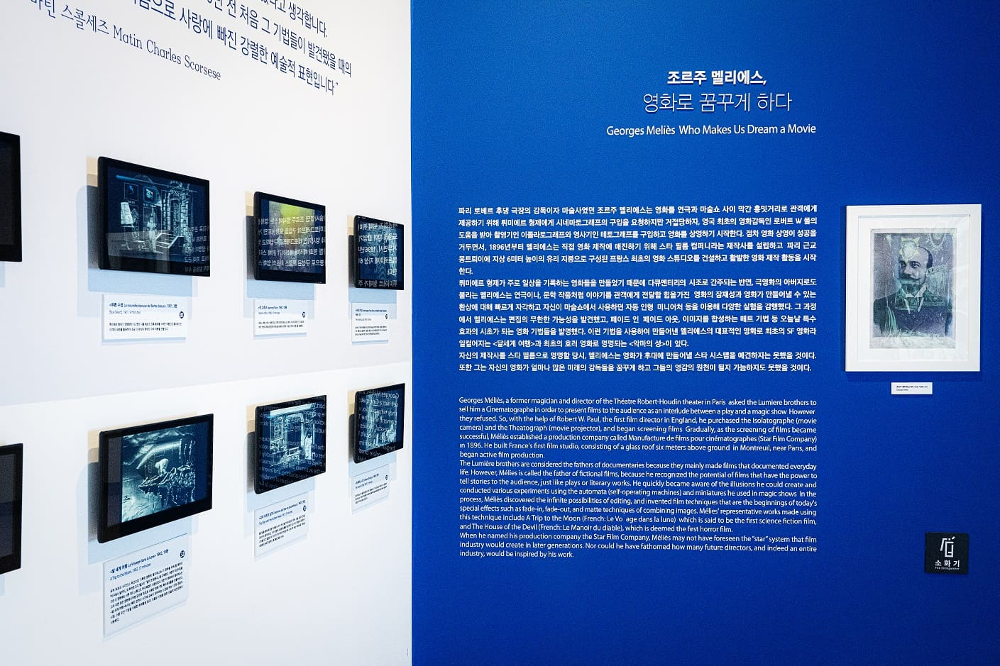
| 조르주 멜리에스, 영화로 꿈꾸게 하다 섹션 일부
달세계 여행, 채색 체험 존
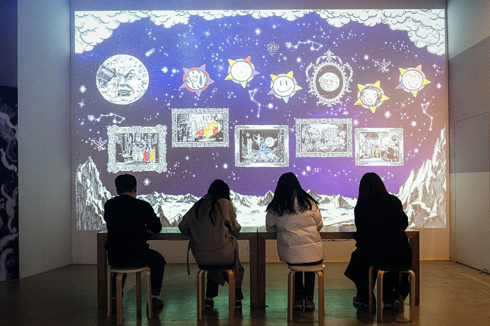
| 달세계 여행, 채색 체험 존
파리 로베르 후댕 극장의 감독이자 마술사였던 조르주 멜리에스는 영화를 연극과 마술쇼 사이 막간 흥밋거리로 관객에게 제공하기 위해 영화를 상영하기 시작합니다. 점차 영화 상영이 성공을 거두면서, 1896년부터 멜리에스는 직접 영화 제작에 매진하기 위해 스타 필름 컴퍼니라는 제작사를 설립하고, 파리 근교 몽트뢰이에 지상 6미터 높이의 유리 지붕으로 구성된 프랑스 최초의 영화 스튜디오를 건설하고 활발한 영화 제작 활동을 시작합니다.
뤼미에르 형제가 주로 일상을 기록하는 영화들을 만들었기 때문에 다큐멘터리의 시조로 간주되는 반면, 극영화의 아버지로도 불리는 멜리에스는 연극이나, 문학 작품처럼 이야기를 관객에게 전달할 힘을 가진 영화의 잠재성과 영화가 만들어낼 수 있는 환상에 대해 빠르게 자각하고 자신이 마술쇼에서 사용하던 자동 인형, 미니어처 등을 이용해 다양한 실험을 감행했습니다. 그 과정에서 멜리에스는 편집의 무한한 가능성을 발견했고, 페이드 인, 페이드 아웃, 이미지를 합성하는 매트 기법 등 오늘날 특수효과의 시초가 되는 영화 기법들을 발명습니다. 이런 기법을 사용하여 만들어낸 멜리에스의 대표적인 영화로 최초의 SF 영화라 일컬어지는 <달세계 여행> 과 최초의 호러 영화로 명명되는 <악마의 성> 이 있습니다.
이번 전시는 <달세계 여행>에 대한 오마주 영화 <조르주 멜리에스, 영화 대탐험>(김한상, 2022)를 감상할 수 있으며, 태블릿에 설치된 <달세계 여행>의 주요 장면을 관람객이 채색하면 거대한 스크린에 반영되는 인터랙티브 체험도 가능합니다.